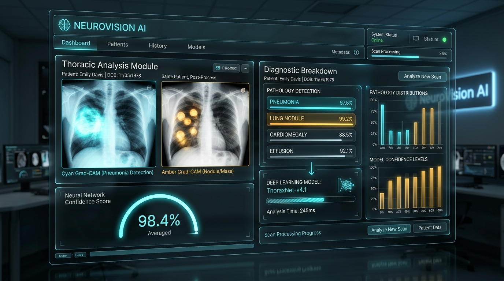
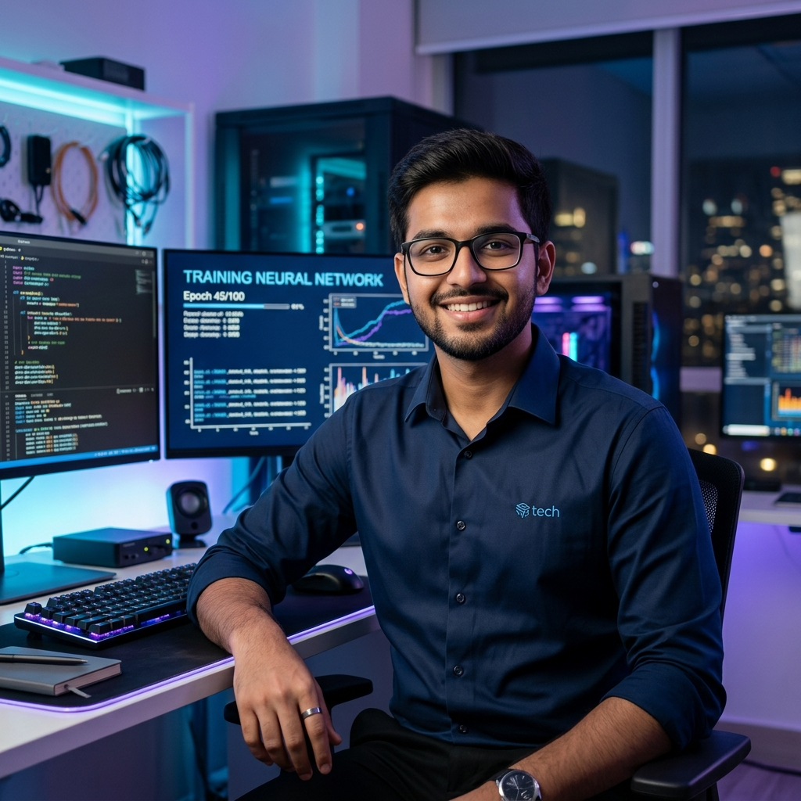
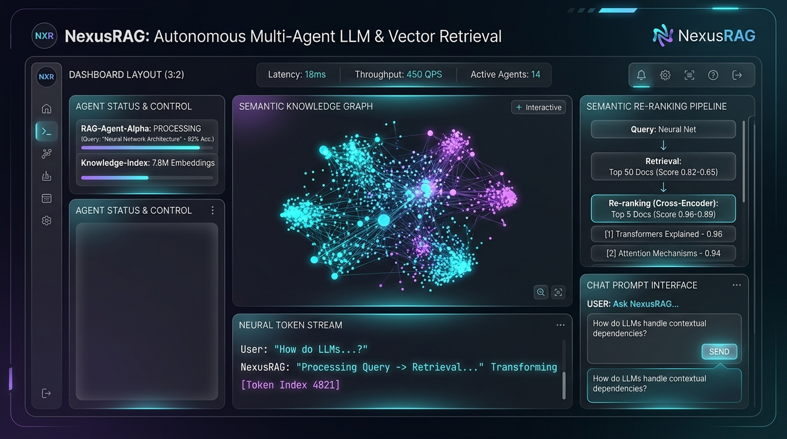
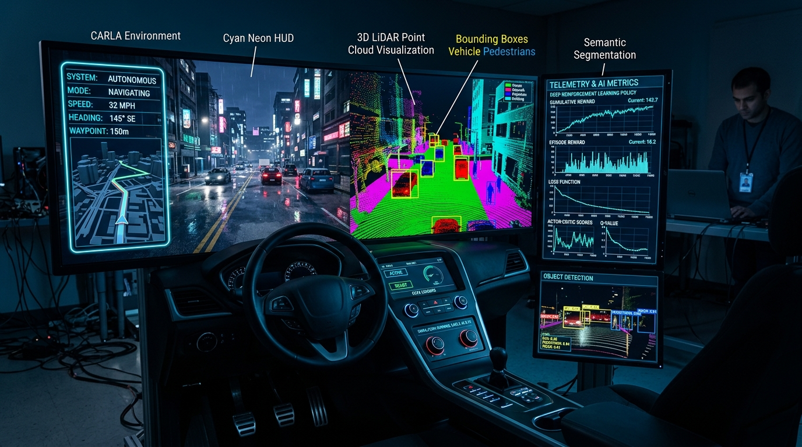
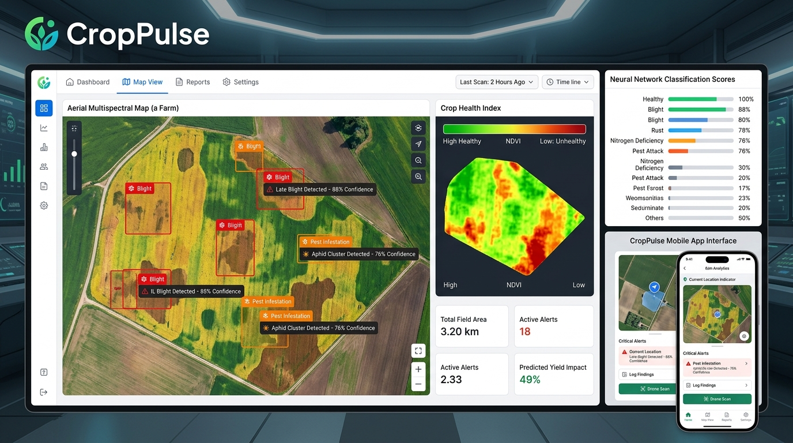
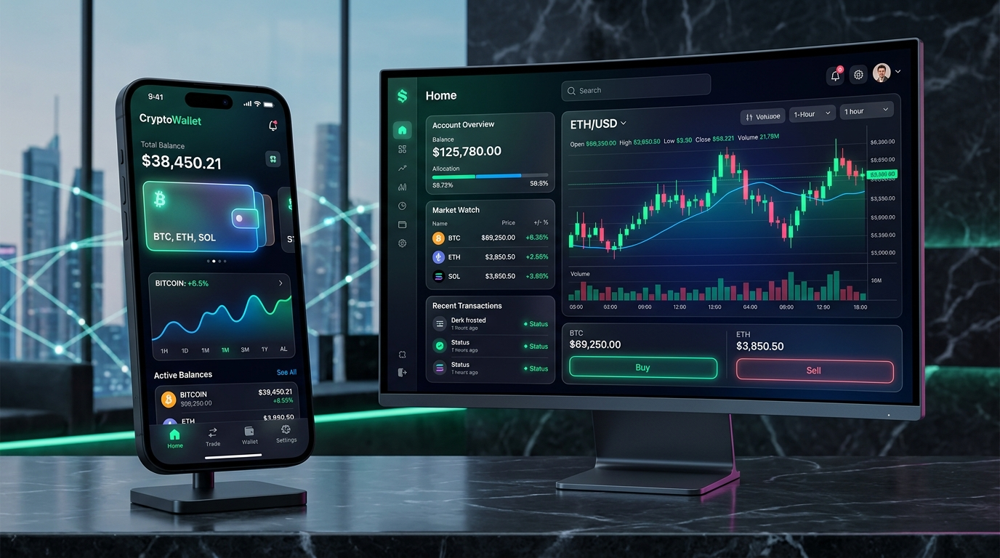
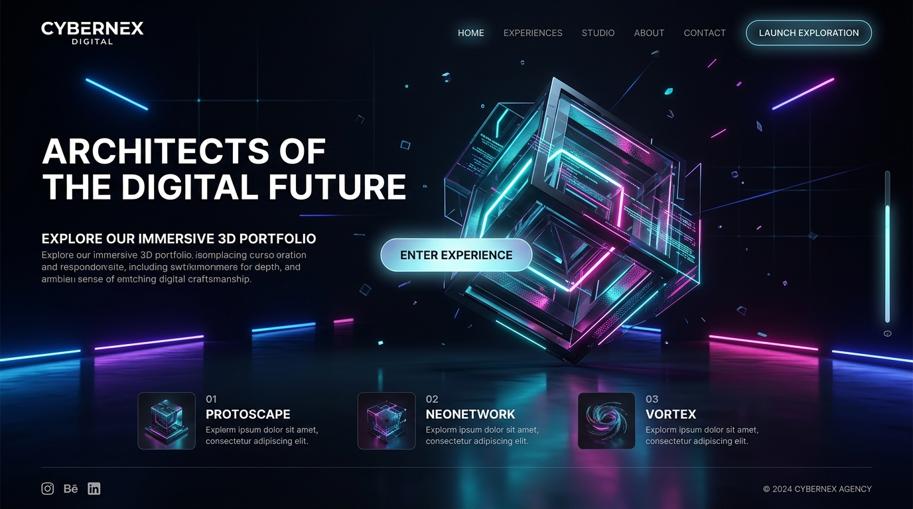

B.Tech AI & ML Undergrad ('26) • Open for AI/ML Roles & Research
Hi, I'm Sahil Singh |
Passionate B.Tech Artificial Intelligence & Machine Learning (AIML) student engineering production-ready deep learning systems. Specialized in Computer Vision, LLM/RAG Architectures, and low-latency edge deployment with mathematical rigor.

PyTorch & Transformers
State-of-the-Art Deep Learning
SIH Finalist
National AI Innovation Podiums
Sub-18ms Inference
TensorRT & ONNX Runtime
About Me & Academics
Rooted in Mathematics, Engineered with Neural Networks
Bridging theoretical research in deep learning with high-throughput production deployment.
I am an undergraduate student in B.Tech Artificial Intelligence and Machine Learning (AIML) maintaining a cumulative CGPA of 8.92 / 10.0. My core passion lies at the intersection of mathematical theory—multivariable calculus, linear algebra, stochastic optimization—and real-world AI systems engineering.
Rather than treating models as opaque black boxes, I focus on the underlying mechanics: loss landscape geometry, attention entropy, model pruning, and quantization. From training Vision Transformers on edge medical datasets to building autonomous LLM agents with vector retrieval, I build AI solutions designed for measurable impact and speed.
Computer Vision & Interpretability
Developing Vision Transformers (ViT), YOLO architectures, and Grad-CAM attention visualizers for medical pathology and edge robotics.
Generative AI & LLM Systems
Architecting multi-agent RAG pipelines using LangChain, quantized open-weight models (Llama 3, Mistral), and low-latency vector databases.
Edge Acceleration & MLOps
Converting heavy PyTorch checkpoints to INT8/FP16 ONNX and TensorRT runtimes, cutting latency by up to 65% on edge GPUs.
0
+
AI/ML Models Deployed
0
.9%
Academic CGPA (8.92/10)
0
+
Hackathon Awards & Podiums
0
k+
Community Model Downloads
Technical Arsenal
AI, Machine Learning & Software Skills
Deep learning frameworks, algorithmic problem solving, and production deployment toolchains.
PyTorch & TorchVision
96%
Hugging Face & Transformers
94%
Computer Vision & OpenCV
93%
LLMs, LangChain & RAG
91%
Python & Numerical Computing
98%
Scikit-Learn & Statistical ML
95%
C++ & Algorithmic DSA
88%
FastAPI & Async AI Services
92%
TensorRT, ONNX & MLOps
89%
PostgreSQL & Vector DBs
87%
AWS Cloud & SageMaker
84%
Streamlit, Gradio & Web UI
92%
Hands-On Engineering
Interactive AI Playground
Experience real-time neural inference simulation and interactive synaptic signal propagation.
Model: DistilBERT-Lite ONNX
Quick Prompts:
Real-Time Model Telemetry
GPU Inference Ready
24
Token Count
14.2 ms
Inference Latency
98.7%
Primary Confidence
Softmax Class Probability Distribution:
Positive / Breakthrough
96%
Technical / Analytical
84%
Critical / Issue Detection
3%
Subword Token Stream [BPE]:
[CLS]
The
fine
##tuned
Vision
Transformer
98.4%
[SEP]
Activation Function:
Architecture: 4-Layer Multilayer Perceptron (4 -> 8 -> 8 -> 3)
Selected AI Systems
Featured AI Creations
Real-world deep learning architectures engineered for precision, latency, and societal impact.





Proven Execution
Hackathons, Research & Internships
Hands-on collegiate experience solving difficult computer vision and deep learning challenges.
Ministry of Education / Government of India
Architected an autonomous aerial disaster rescue system utilizing thermal drone video streams to detect stranded human survivors in total darkness. Optimized custom YOLOv8 model down to 18MB for edge inference on NVIDIA Jetson Orin Nano.
- Selected as Top 5 finalist out of 50,000+ national applicant teams.
- Reached 28 FPS real-time detection on low-power edge compute.
- Integrated automated GPS telemetry broadcasting to rescue control units.
Center for AI & Cognitive Computing
Conducted deep learning research on post-training quantization (PTQ) and structural attention pruning for lightweight Vision Transformers (ViT) on constrained edge medical devices.
- Reduced model parameter footprint by 58% while maintaining 98.1% of original classification accuracy.
- Benchmark-tested cross-platform throughput across TensorRT, ONNX, and OpenVINO.
- Drafted research paper findings for upcoming AI conference submission.
NeuralCraft Solutions
Developed real-time video analytics pipelines for smart facility occupancy and safety compliance. Implemented multi-camera tracking with feature re-identification.
- Built person re-identification pipeline tracking individuals across 6 non-overlapping CCTV camera angles.
- Slashed server compute costs by 35% through dynamic frame skipping and motion thresholding.
National Collegiate AI Innovation League
Awarded First Prize among 120+ collegiate developer teams for developing CropPulse AI, a zero-cloud offline crop diagnostic tool helping smallholder farmers identify disease outbreaks in remote areas.
- Evaluated highest for technical architecture, social relevance, and UX simplicity.
- Received INR 50,000 cash grant and incubator mentorship support.
Formal Learning
Education & Certifications
Academic foundations and industry-recognized certifications validating deep technical expertise.
8.92 / 10.0 CGPA
2022 — 2026
Bachelor of Technology (B.Tech)
Artificial Intelligence & Machine Learning (AIML)
Department of Computer Science & Engineering
Relevant Core Coursework:
Deep Learning Specialization
DeepLearning.AI & Andrew Ng (Coursera)Neural Networks, Hyperparameter Tuning, CNNs, Sequence Models & Attention Mechanisms.
AWS Certified Machine Learning - Specialty
Amazon Web Services (AWS)Data Engineering, Exploratory Analysis, Modeling, Machine Learning Implementation & Operations on AWS.
Hugging Face Transformers & NLP
Hugging Face Open Source CommunityFine-tuning LLMs, Tokenizers, Parameter-Efficient Fine-Tuning (PEFT/LoRA), and Multi-Task Pipelines.
Mathematics for Machine Learning
Imperial College London (Coursera)Multivariate Calculus, Linear Algebra, Orthogonal Projections, and Principal Component Analysis (PCA).
Get In Touch
Interested in Collaborating? Let's Connect.
Actively seeking AI/ML engineering internships, research fellowships, and full-time 2026 roles.
Direct Email
sahilsingh.aiml26@gmail.com
Location & Relocation
India • Open to Global Remote & On-Site Relocation
Current Status & Availability
Available for 2026 Roles & AI Internships